Zeliang Zhang
I am a PhD student in the Department of Computer Science at the University of Rochester, advised by Prof. Chenliang Xu. I received my B.Eng. from the CS Department, Huazhong University of Science and Technology in 2022. In my undergraduate studies, I worked with Prof. Kun He and Mr. Xiaosen Wang at HUST on adversarial machine learning. I also work closely with Prof. Yijie Peng at PKU on gradient estimation (zeroth-order optimization), Prof. Xiao-Yang Liu at RPI/Columbia on high-performance quantum and tensor computation, and Dr. Xiaodong Liu at Microsoft Research on efficient LLMs.
Currently, I mainly work on efficient and reliable AI, ranging from classical deep learning models to LLMs. I enjoy playing the Erhu and am also familiar with the violin. I am also actively studying fencing now. Feel free to reach out and chat.
{kind=link}
News
| [5/2025] | I will work as a research intern at the Deep Learning Group of Microsoft Research, Redmond. |
| [4/2025] | Welcome to join our workshop at ICCV 2025 in Hawaii on Oct. 20. Workshop site. |
| [5/2024] | I worked as a research intern at the Deep Learning Group of Microsoft Research, Redmond. |
| [1/2024] | I worked as an Erhu performer at the Traditional Chinese Ensemble Group of Rochester. |
| [10/2021] | I worked as a research intern at the Machine Learning for Sustainability Group of Microsoft Research Asia, Beijing. |
Research
(* indicates equal contribution with random author order. ‡ indicates the project leader.)
|
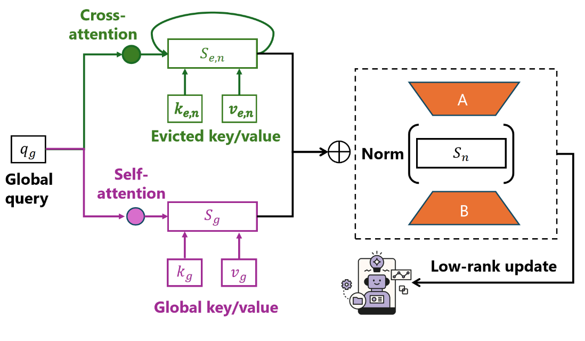 |
Training Large Reasoning Models Efficiently via Progressive Thought Encoding
ICLR, 2026
We propose a parameter-efficient method to post-train LLMs to improve long-context reasoning ability under limited memory. |
|
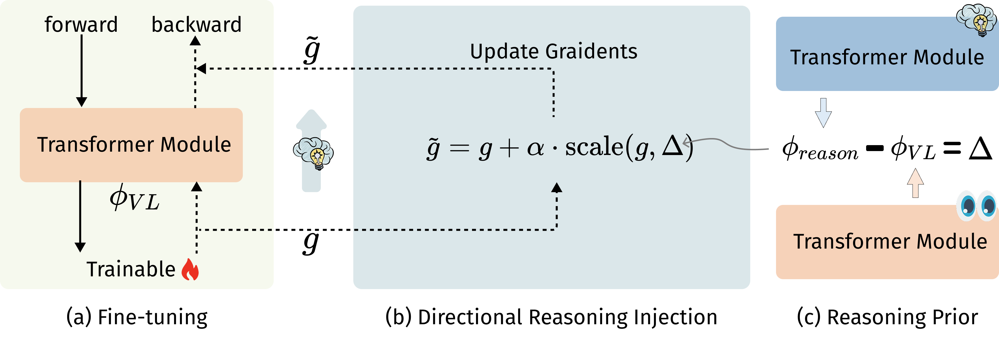 |
DRIFT: Directional Reasoning Injection for Fine-Tuning MLLMs
arXiv, 2025
DRIFT transfers reasoning from DeepSeek-R1 into QwenVL via gradient-space guidance, improving multimodal reasoning without destabilizing alignment or expensive RL. |

|
Harnessing the Computation Redundancy in ViTs to Boost Adversarial Transferability
NeurIPS, 2025
We propose a bag of tricks to boost the adversarial transferability of ViT-based attacks. |
|
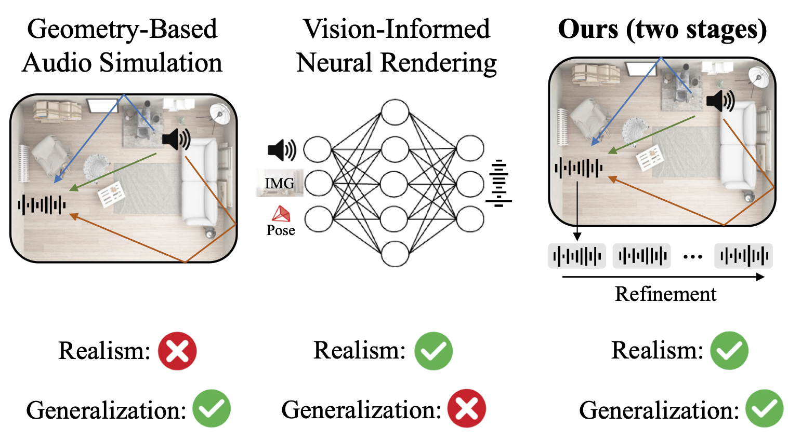 |
π-AVAS: Can Physics-Integrated Audio-Visual Modeling Boost Neural Acoustic Synthesis?
ICCV, 2025
We propose a novel method to boost audio-visual NeRF. |
|
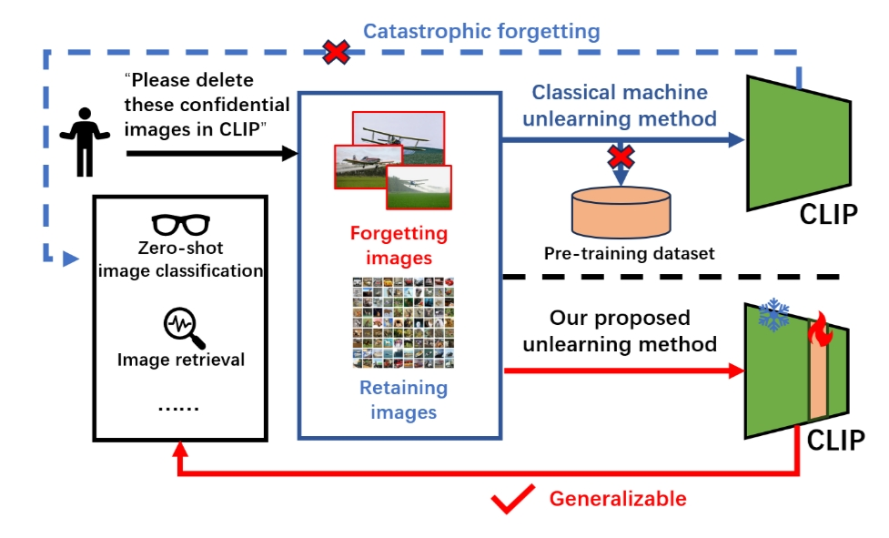 |
Targeted Forgetting of Image Subgroups in CLIP Models
CVPR, 2025
We propose a novel method to unlearn CLIP on a subgroup of images. |
|
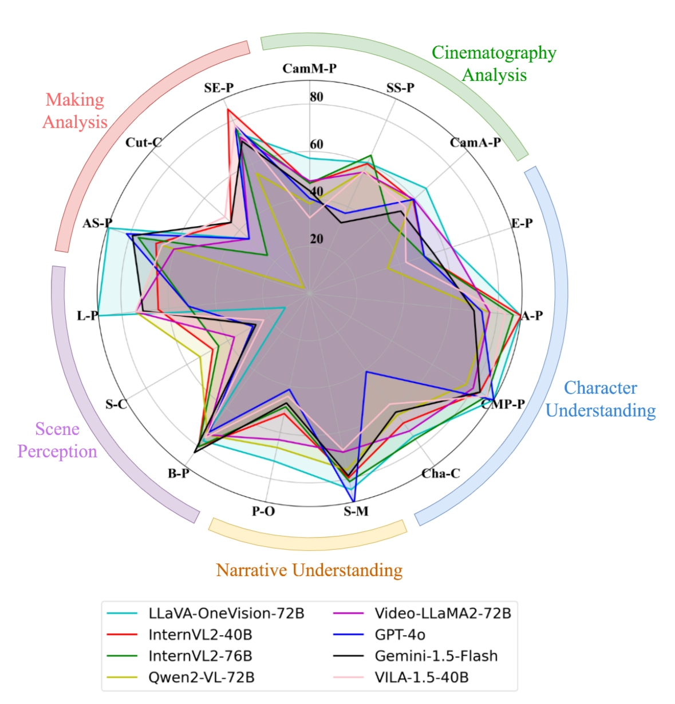 |
VidComposition: Can MLLMs Analyze Compositions in Compiled Videos?
CVPR, 2025
We propose a new benchmark specifically designed to evaluate the video composition understanding capabilities of MLLMs. |
|
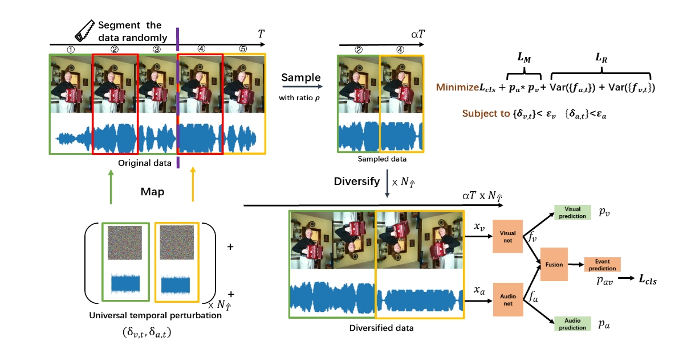 |
Rethinking Audio-Visual Adversarial Vulnerability from Temporal and Modality Perspectives
ICLR, 2025
We propose a powerful audio-visual adversarial attack and adversarial training defense method. |
|
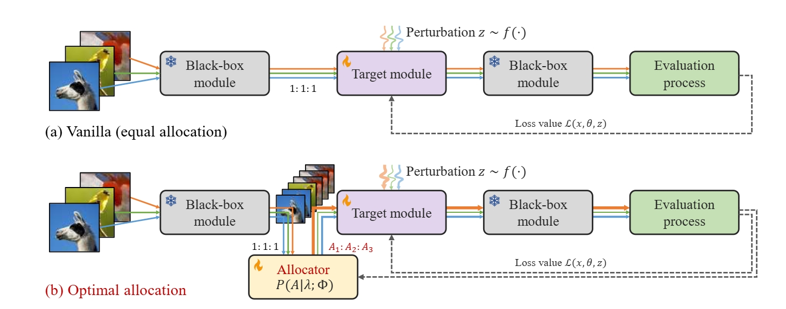 |
FLOPS: Forward Learning with OPtimal Sampling
ICLR, 2025
We propose to allocate the optimal number of queries during forward-only training to balance estimation accuracy and computational efficiency. |
|
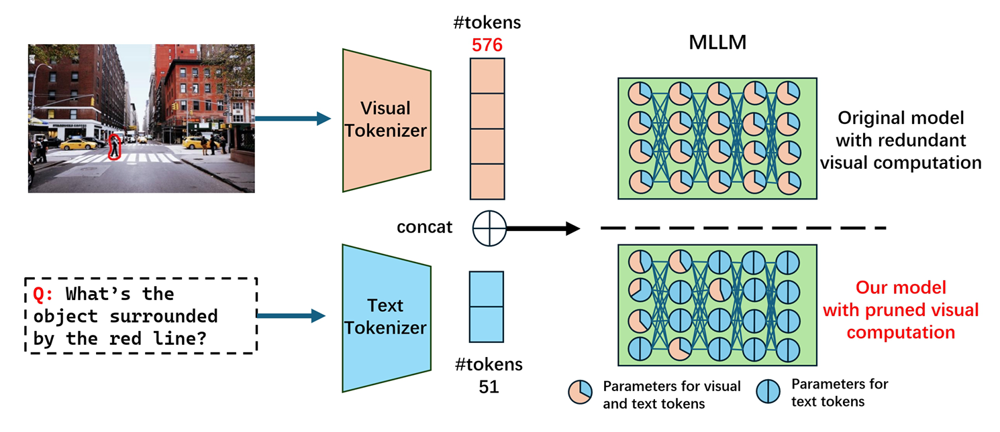 |
Treat Visual Tokens as Text? But Your MLLM Only Needs Fewer Efforts to See
Preprint, 2024
We prune the visual-related computation in multiple MLLMs to accelerate inference. |
|
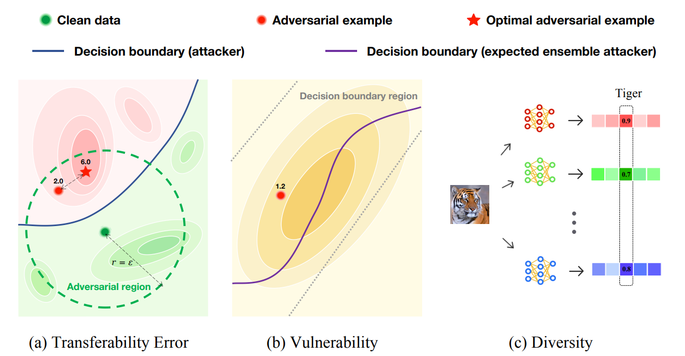 |
Understanding Model Ensemble in Transferable Adversarial Attack
ICML, 2025
We provide early theoretical insights that serve as a roadmap for advancing model ensemble adversarial attack. |
|
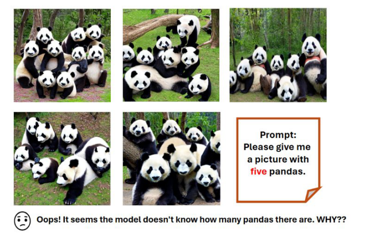 |
Can CLIP Count Stars? An Empirical Study on Quantity Bias in CLIP
Findings of EMNLP, 2024
We empirically investigate the quantity bias in CLIP. |
|
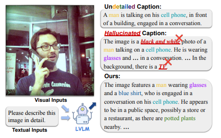 |
Do More Details Always Introduce More Hallucinations in LVLM-based Image Captioning?
Preprint, 2024
To alleviate hallucinations, we propose Differentiated Beam Decoding (DBD), along with CLIP-Precision, CLIP-Recall, and CLIP-F1. |
|
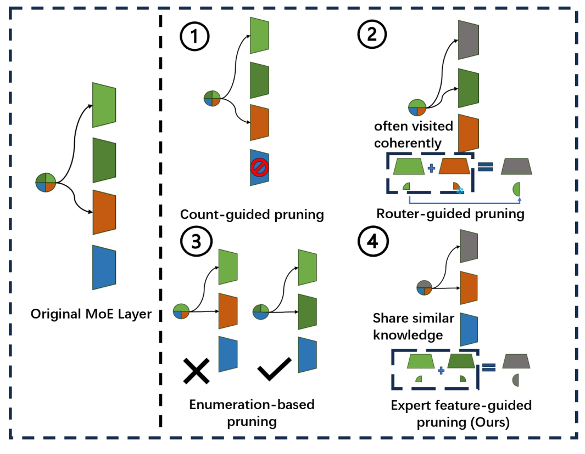 |
Diversifying the Expert Knowledge for Task-Agnostic Pruning in Sparse Mixture-of-Experts
ACL Findings, 2025
We propose grouping and pruning similar experts to improve parameter efficiency in sparse MoE models. |
|
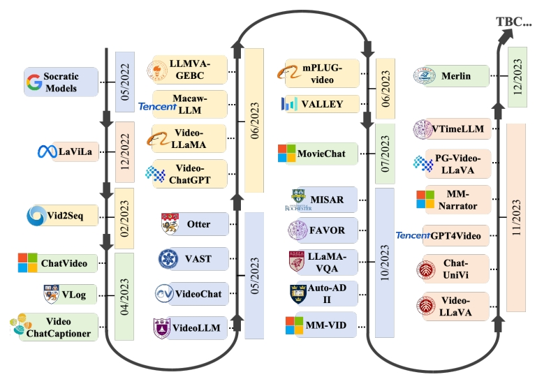 |
Video Understanding with Large Language Models: A Survey
Technical Report, 2023
This survey provides a detailed overview of recent advancements in video understanding with LLMs. |
|
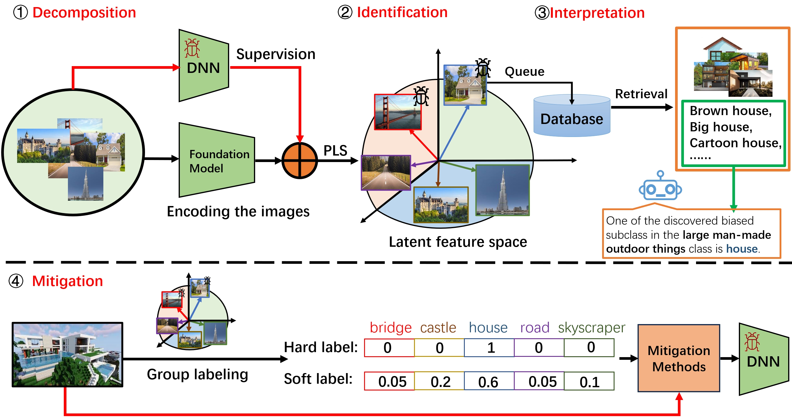 |
Discover Multiple Biased Subgroups in Image Classifiers
CVPR, 2024
We propose DII (decomposition, identification, and interpretation) to debug multiple biases in models. |
|
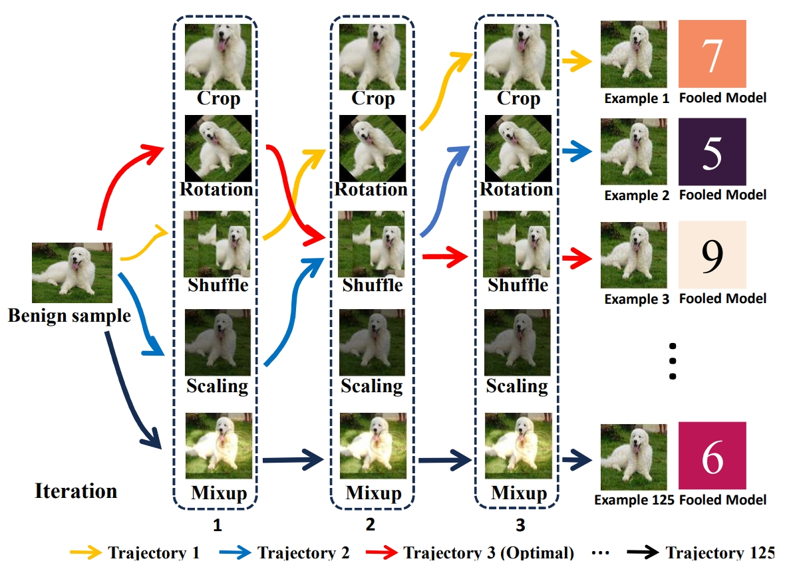 |
Learning to Transform Dynamically for Better Adversarial Transferability
CVPR, 2024
We propose L2T (learn to transform), a novel method to boost adversarial transferability. |
|
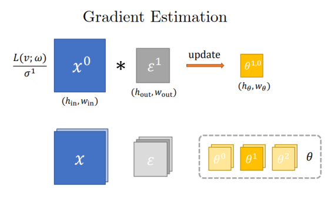 |
One Forward is Enough for Training Neural Networks via the Likelihood Ratio Method
ICLR, 2024
We explore the potential of the likelihood ratio method for gradient estimation and train multiple neural architectures without backpropagation. |
|
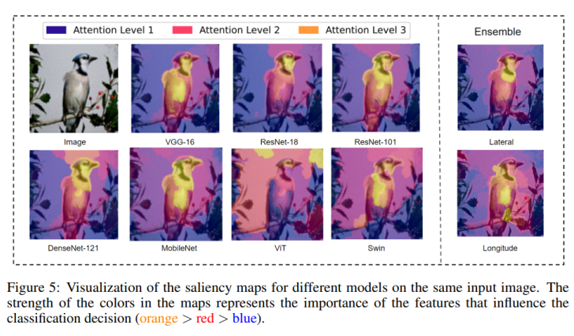 |
Bag of Tricks to Boost the Adversarial Transferability
Technical Report, 2024
We propose a bag of novel tricks to boost adversarial transferability among different models. |
|
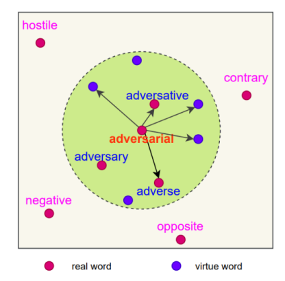 |
Random Smooth-based Certified Defense against Text Adversarial Attack
EACL Findings, 2024
We treat word substitution as a continuous perturbation on word embeddings for better robustness. |
|
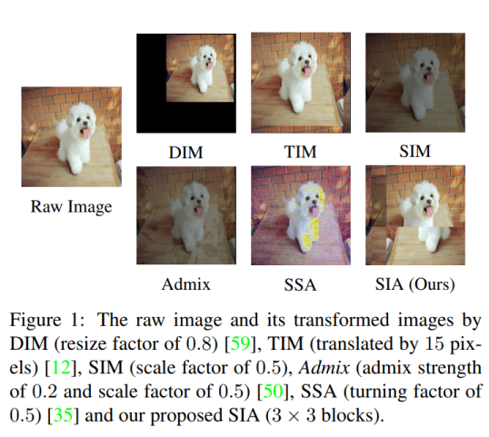 |
Structure Invariant Transformation for Better Adversarial Transferability
ICCV, 2023
We propose Structure Invariant Transformation (SIA), a novel input transformation attack for more diverse gradients. |
|
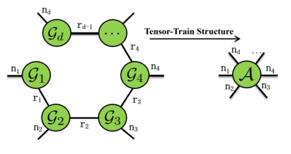 |
High-performance Tensor-Train Primitives Using GPU Tensor Cores
IEEE Transactions on Computers, 2024
We present high-performance tensor-train primitives using GPU tensor cores and demonstrate three applications. |
|
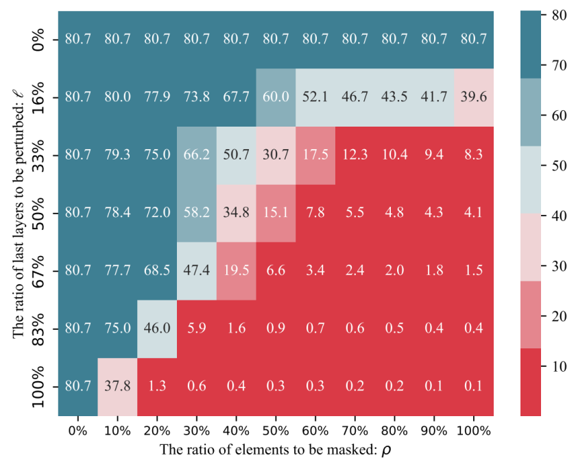 |
Diversifying the High-level Features for Better Adversarial Transferability
BMVC, 2023, oral
We propose diversifying high-level features for more transferable adversarial examples. |
|
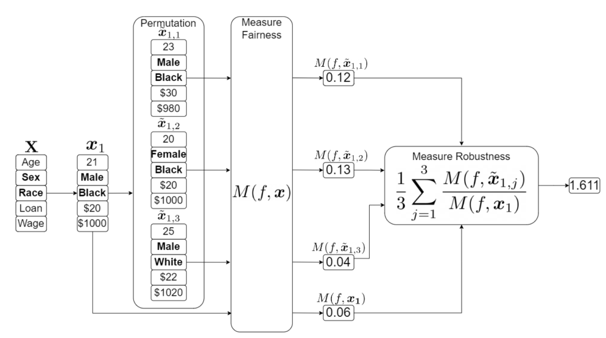 |
How Robust is your Fair Model? Exploring the Robustness of Diverse Fairness Strategies
Data Mining and Knowledge Discovery, 2024
We quantitatively evaluate the robustness of fairness optimization strategies. |
|
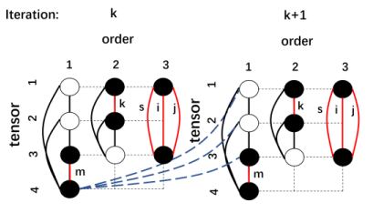 |
Classical Simulation of Quantum Circuits: Parallel Environments and Benchmark
NeurIPS Datasets and Benchmarks Track, 2023
We develop massively parallel environments to simulate quantum circuits and open-source the benchmark suite. |
|
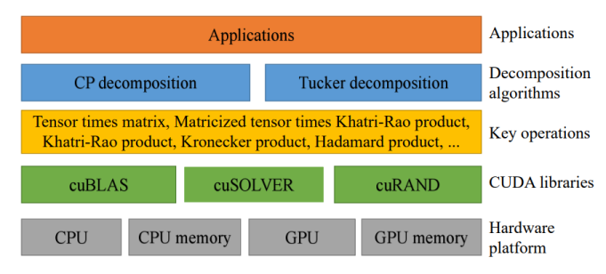 |
High-Performance Tensor Learning Primitives Using GPU Tensor Cores
IEEE Transactions on Computers, 2022
We propose hardware-oriented optimization strategies for tensor learning primitives on GPU tensor cores. |
|
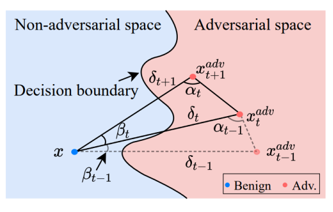 |
Triangle Attack: A Query-efficient Decision-based Adversarial Attack
ECCV, 2022
We propose Triangle Attack (TA), which leverages triangle geometry to optimize perturbations efficiently. |
|
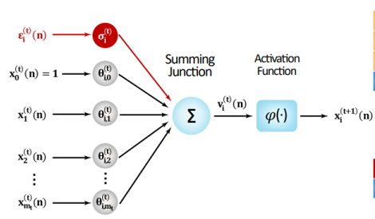 |
Noise Optimization for Artificial Neural Networks
Short paper: CASE, 2022; Long paper: T-ASE, 2024
We propose a new technique to compute pathwise stochastic gradient estimates with respect to neuron noise standard deviations. |
Education
|
University of Rochester, NY, USA Ph.D. in Computer Science Sep. 2022 - Present Advisor: Chenliang Xu |
|
|
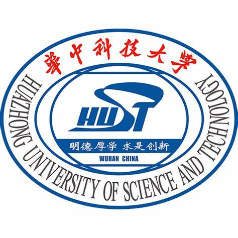 |
Huazhong University of Science and Technology, Wuhan, China B.Eng. in Computer Science and Technology Sep. 2018 - Jun. 2022 |
Experience
|
Microsoft Research, Redmond, US Part-time Researcher Feb 2026 - Advisor: Xiaodong Liu Work on efficient LLMs. |
|
|
Microsoft Research, Redmond, US Research Intern, then Part-time Researcher May 2025 - Dec. 2025 Advisor: Xiaodong Liu and Hao Cheng Work on efficient training and inference of reasoning language models. |
|
|
Microsoft Research, Redmond, US Research Intern, then Part-time Researcher May 2024 - Nov. 2024 Advisor: Xiaodong Liu and Hao Cheng Work on efficient training and inference of language models. |
|
|
Microsoft Research Asia, Beijing, China Research Intern Oct. 2021 - Jun. 2022 Advisor: Xinran Wei Work on high-performance computation of DFT, an important bottleneck in AI-driven material design. |
|
|
Columbia University, NYC, US Research Assistant Feb. 2020 - Dec. 2022 Advisor: Xiao-Yang Liu Work on high-performance tensor computation using GPUs and publish two workshop papers: Trillion-Tensor: Trillion-Scale CP Tensor Decomposition (IJCAI 2020 TNRML Workshop) and Parallel TTr1-Tensor: Randomized Compression-based Scheme for Tensor Train Rank-1 Decomposition (NeurIPS 2020 QTNML Workshop). |
Projects
|
ElegantRL
(~ 3k stars! 🚀) Develop the RL-Hamiltonian algorithm to stabilize RL training and publish it as a poster in the NeurIPS 2021 QTNML Workshop. |
|
|
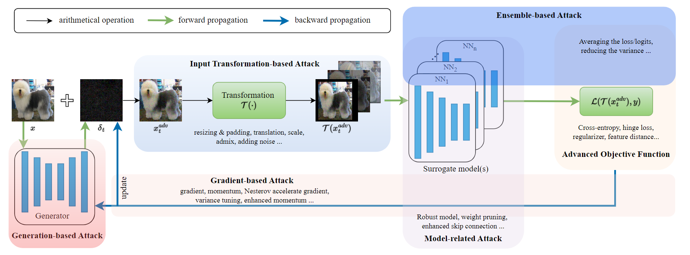 |
TransferAttack One of the main contributors. TransferAttack is a PyTorch framework to boost adversarial transferability for image classification. |
|
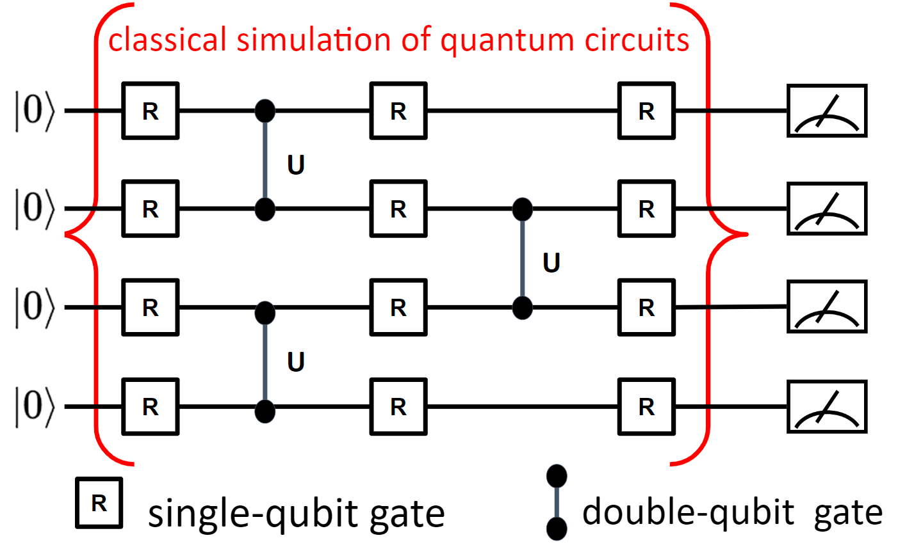 |
RL for Quantum Circuits One of the main contributors. Open-source benchmark and environments for classical simulation of quantum circuits. |